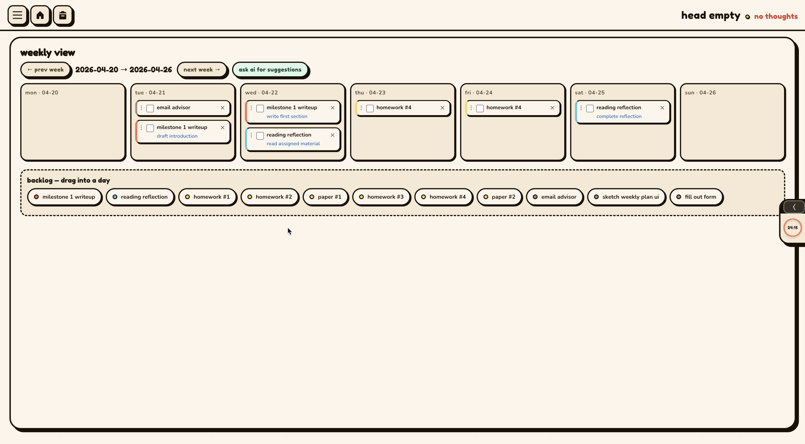
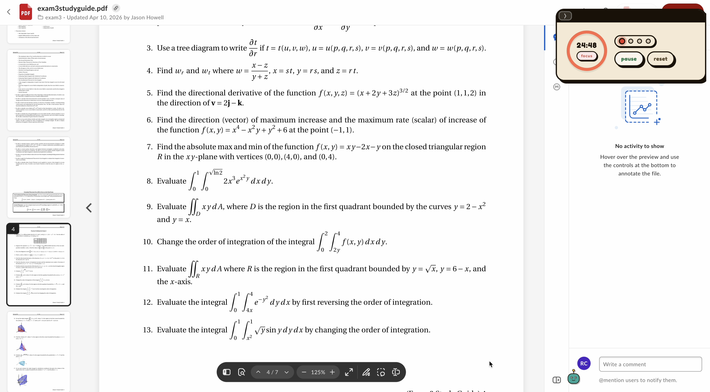

the idea
As a student, I don't always have the motivation to focus on my assignments or studying, so I wanted to think about how to make focusing more fun. The game loop borrows from cozy collecting games like Pokémon Sleep, where doing the real-life thing (sleeping there, studying here) earns you something you want to come back for. It had to be more than just checking something off, and using time, something you cannot "lie" about, was the perfect platform.
Upload your syllabi at the start of the semester and the app fills in your courses, assignments, and grade weights. Then the game takes over. Focus on the habitat within the app, or focus on a different screen (just not one that is a distraction!).
what each mechanic does for the user
- creatures appear while you focus: a reason to keep the timer running, and to keep you engaged on the screen so you don't miss a creature crossing.
- focus guard: mark your distracting sites, and if you visit one mid-session the timer pauses and no new creatures spawn.
- coins for finished assignments: a small reward so the work your doing is actually working towards a goal.
- habitat: something to build over the semester that you'd feel a little bad abandoning.
see it in action
try it: stay focused, catch a creature
A pomodoro is 25 minutes, so here's a 10-second version. Start the timer and wait ("focus") the 10-seconds. After time is up, a creature will appear. Click it to catch it before it's too late!
ready when you are.
web app + chrome extension
The web app holds the actual assignment tracker along with the habitat and a creature crossing on a nice background. The companion Chrome extension overlays the timer and creature crossing on top of every Chrome tab, and during focus sessions it blocks sites you marked as "forbidden" during focus. Drag the timer around or minimize it.


designing + building
things working and breaking
One of the main challenges was balancing the frequency of creature appearances. Initially, they spawned way too often, making the experience feel cluttered and more distracting than conducive to focusing. After tuning the spawn rate, I found a good balance that keeps the experience engaging without being overwhelming.
some design decisions
The creature size when crossing the bottom of the screen was a significant choice I had to make. They had to be big enough to actually be noticeable when you were focused, but not too big that you would notice them if you weren't (looking at your phone, etc.). The size I chose was small enough that if you were looking at the screen, you would see it happen, but if you weren't, they would likely just pass by.
Also, the upload your syllabus feature worked so much better than I thought it would, and when showing friends, this was the part they actually found most interesting. This thought really helped expand into Vivifi eventually.
continuous improvement
First and foremost, creatures were intended to just be "shapes with eyes" for this level of project, and thus my first goal would be to design and create actual creatures with names and personalities you want to get the chance to catch. I would also make the habitat and what you can buy with coins more visually appealing so people actually felt committed to getting and spending coins. I would also love to develop the app to not only be a web app and chrome extension, but to also be a desktop app where the creatures could walk across different screens. Imagine if I could collect creatures while coding in VSCode?
- tools
- cursor & claude, hosted on Render
- timeline
- spring 2026, in ~8 hours
- role
- solo, design + development
- course
- 15-113 Effective Coding with AI
- status
- live, as functional prototype